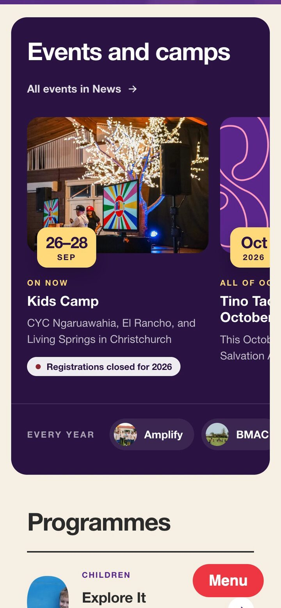

/ 01
The front door
The homepage opens with a greeting in the territory’s languages and puts the three most common jobs up front: search the resources, jump to an area, or find your Next Gen person. The film plays inside the speech bubble from the brand, and scrolling opens it out into the Tino Taonga statement. Before any of that, a line of scripture comes up, chosen for the season of the church year.
Everything below the opening fills itself in: the next events and whether they’re open, programmes grouped by area, the team, the newest resources and the latest newsletter.
- In Squarespace
- One post holds the headline, greeting, film and statement. Every other section reads from the four blogs.
- In code
- A page-header script builds the page. The scripture intro sits in the site-wide header.